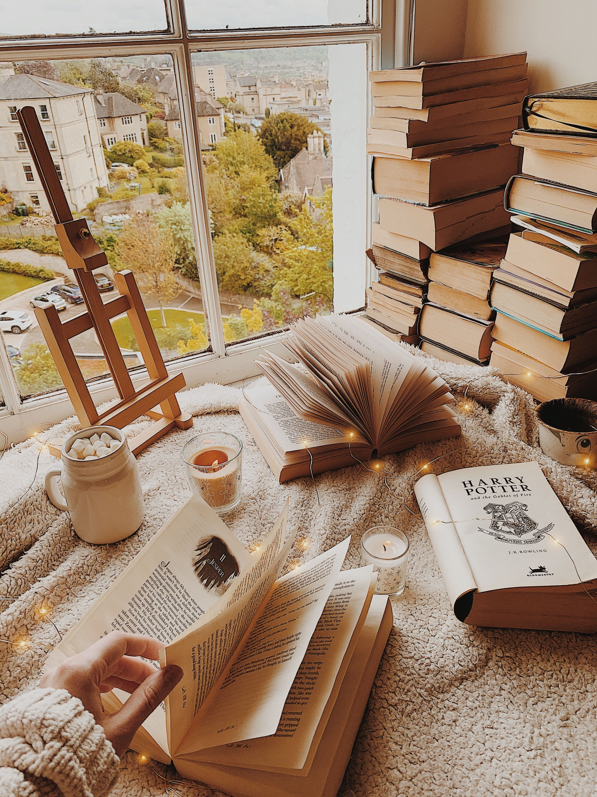
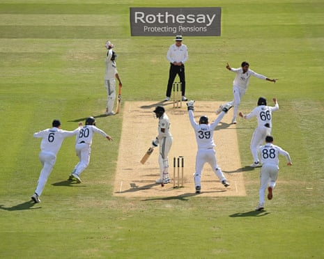
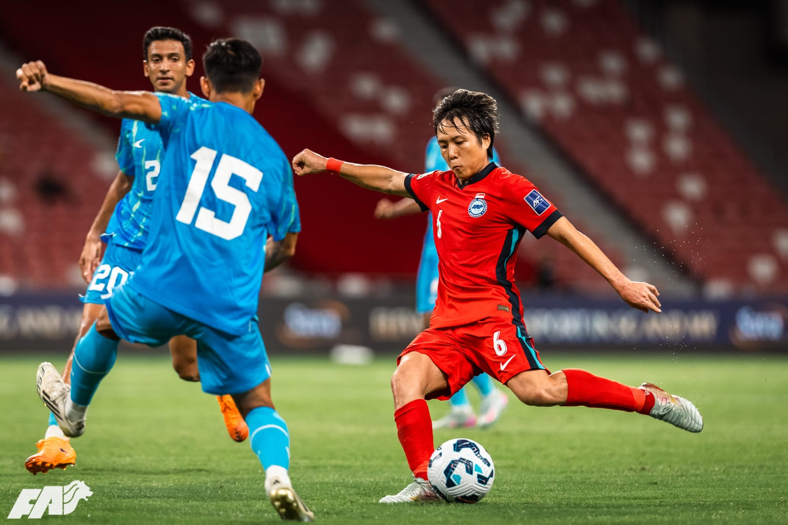

Reading Bachelor of Science (Hons) in Information Technology & Management from Faculty of IT, University of Moratuwa
Completed A/Ls in Commerce stream at Kekirawa Central College , achieving 3A passes with a Z-score of 1.9334.

Books have always been my quiet escape into worlds beyond my own. Through reading, I travel across time, meet unforgettable characters, and experience emotions that words alone can create. I am especially drawn to fiction, where imagination has no limits. Writing novels is where my creativity truly comes alive, I turn thoughts into stories, and ideas into characters with their own voices. Every page I write feels like building a new universe from scratch. This journey not only strengthens my creativity but also deepens my understanding of people and emotions. For me, books are not just a hobby, they are a part of who I am.
Music is the background rhythm of my life, always present in moments both big and small. Whether it’s a calm melody during quiet nights or an energetic beat that fuels my motivation, music has a unique way of shaping my emotions. I love exploring different genres, each bringing a new feeling and perspective. It helps me focus when I study and inspires me when I create. Sometimes, a single song can tell a story that words cannot fully express. Music gives me comfort, energy, and inspiration all at once. It is more than sound, it is a feeling I carry with me every day.
Travelling is my way of discovering the beauty and diversity of the world around me. Every journey feels like stepping into a new story, filled with unfamiliar places, cultures, and experiences. I enjoy exploring different environments, tasting new foods, and meeting people from various backgrounds. Each destination teaches me something new and broadens my perspective on life. I love capturing these moments, turning them into memories that last forever. Travelling gives me a sense of freedom and adventure that breaks the routine of everyday life. For me, every trip is not just a visit, it’s a meaningful experience that shapes who I am.

Cricket is more than just a sport to me, it's a passion that runs deep. I love the strategy, patience, and teamwork that the game demands. Whether it's a thrilling T20 finish or a test match battle, cricket always keeps me on the edge of my seat. Following international matches and cheering for Sri Lanka is something I truly enjoy.
Rugby is a sport I deeply admire for its raw energy, discipline, and team spirit. The intensity of every match and the determination of the players always inspire me. Rugby teaches that strength alone isn't enough, it takes unity, courage, and strategy to win. Watching a powerful scrum or a perfectly executed try never gets old for me.

Football is a universal language that brings people together like no other sport. I love the speed, creativity, and passion that top players bring to every match. From local leagues to the FIFA World Cup, every game tells a unique story. The excitement of a last-minute goal or a stunning free kick makes football truly magical to me.